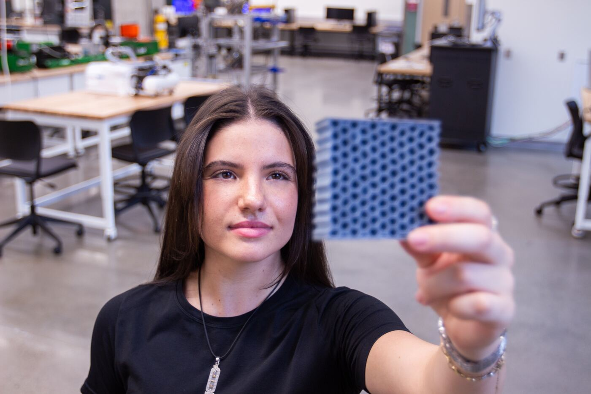
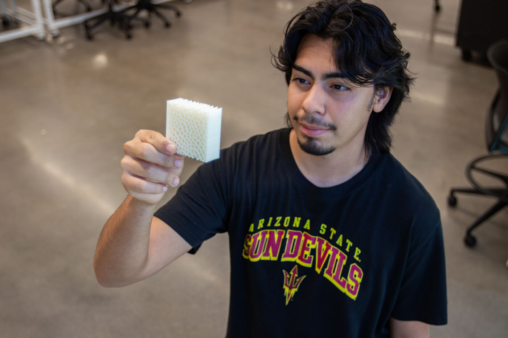
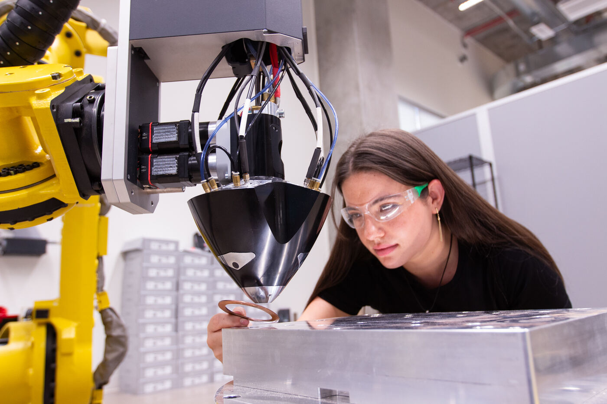

← Back to facilities
Facilities & equipment
3D printing and additive manufacturing
What it is
Additive manufacturing - building parts layer by layer instead of cutting material away. The lab's 3D printing work covers polymer parts like the lattice and honeycomb structures below, printed for coursework, prototypes, and research.

A 3D-printed lattice part made in the lab.

A 3D-printed honeycomb structure.
How the lab uses it
Students use 3D printing to prototype robot parts, fixtures, and end effectors, and to explore what additive manufacturing makes possible - shapes like lattices that cannot be machined. Additive manufacturing also appears in the school's graduate curriculum (for example MFG 598 - Additive Manufacturing).

Additive manufacturing work in progress.